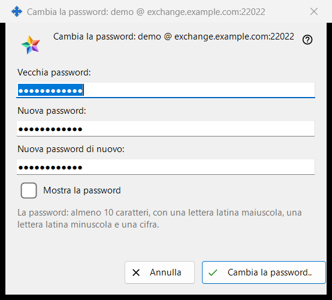
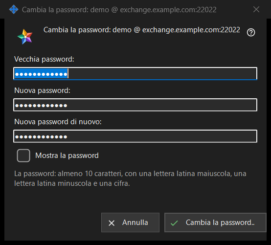

Cambia la password
Scopo
Cambia la password dell'account di scambio a cui questo PC ha effettuato l'accesso. Si apre da «Cambia la password..» nel gruppo «Account di scambio» delle impostazioni dello Share Manager, un pulsante mostrato solo mentre l'account è connesso. Il titolo della finestra indica l'account come login @ server. La finestra di per sé non invia nulla: controlla ciò che hai digitato e lo restituisce, lo invia la connessione di questo PC, e l'ultima parola spetta al server.


In questo ordine
- Nelle impostazioni dello Share Manager trova il gruppo «Account di scambio» e premi «Cambia la password..».
- Digita la vecchia password in «Vecchia password:».
- Digita la nuova password in «Nuova password:» e ripetila in «Nuova password di nuovo:».
- Spunta «Mostra la password» per controllare i tre campi.
- Premi «Cambia la password..»; se compare una riga di avviso, correggi il campo e premi di nuovo.
- Leggi la risposta mostrata nel gruppo.
Gli elementi
I tre campi
La vecchia password, la nuova e la nuova ripetuta. Tutte e tre sono mascherate; la singola spunta «Mostra la password» le rivela insieme e non viene ricordata. I campi vengono svuotati alla chiusura della finestra.
La regola della password
La riga sotto i campi dice: «La password: almeno 10 caratteri, con una lettera latina maiuscola, una lettera latina minuscola e una cifra.» La finestra la controlla subito, così ricevi una risposta prima che venga inviato qualcosa.
La riga di avviso
Il pulsante controlla in quest'ordine: «Indica la vecchia password.», «Le due password non coincidono.», poi la regola: «La password è più corta di 10 caratteri.», «La password non ha una lettera latina maiuscola.», «La password non ha una lettera latina minuscola.», «La password non ha una cifra.». Il primo problema interrompe il controllo, la finestra resta aperta e non viene inviato nulla.
Che cosa succede dopo la pressione
Un inserimento corretto chiude la finestra e il gruppo mostra la risposta. Esito positivo: «La password è cambiata. Questo computer continua a funzionare, e gli altri dispositivi dell'account devono accedere di nuovo.» Altre risposte: «La vecchia password non era corretta.», «Troppi tentativi. Attendi un minuto e riprova.», «Il server ha rifiutato il cambio della password.» e «Non c'è connessione al server. Connettiti e riprova.». Se il server respinge una password debole, viene mostrata la sua frase.
Annulla e tasti
«Annulla» o Esc chiude la finestra senza cambiare nulla; Enter preme «Cambia la password..».
Impostazioni del gestore · Impostazioni condivisione SFTP · Impostazioni server di scambio